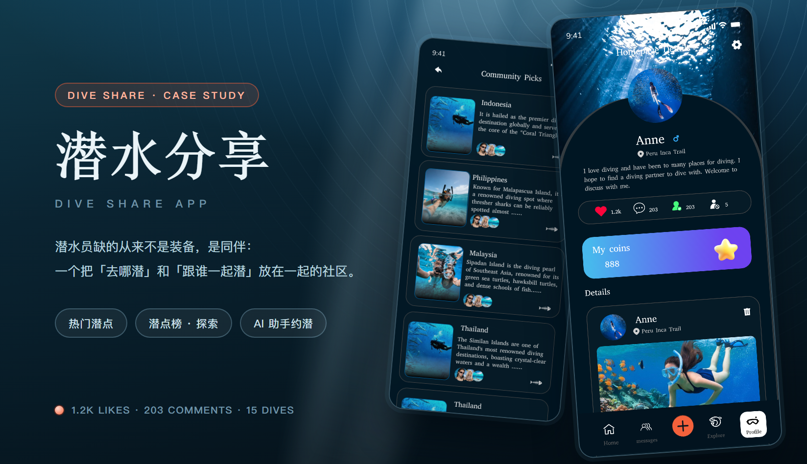
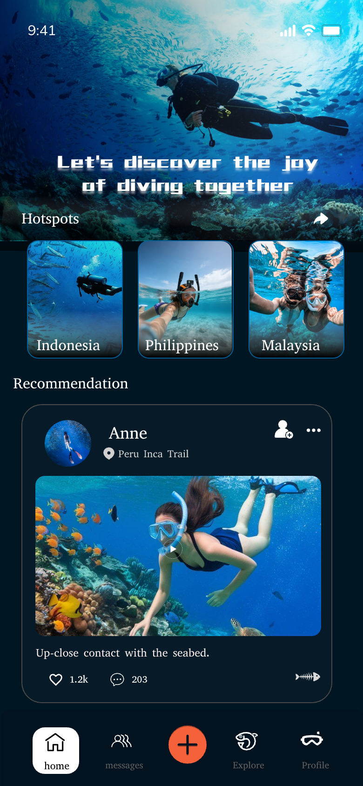
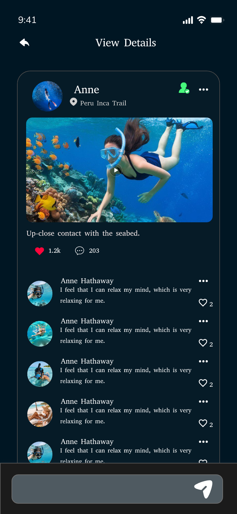
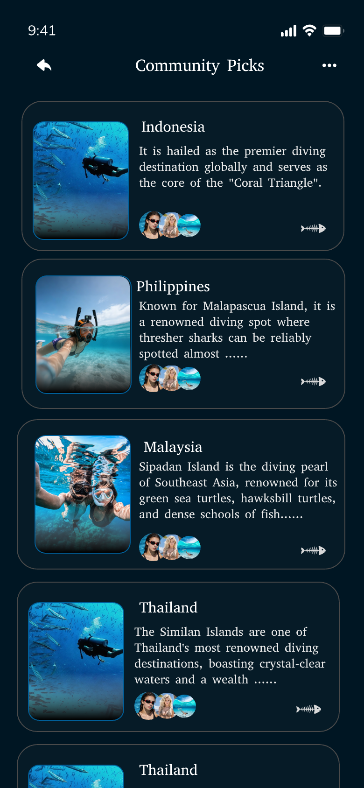
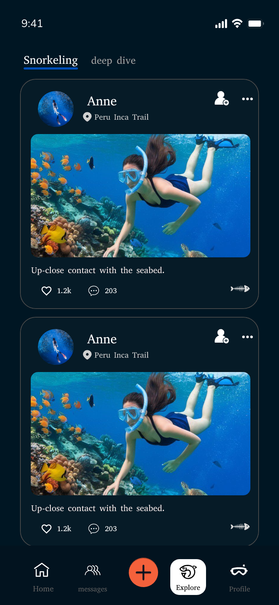
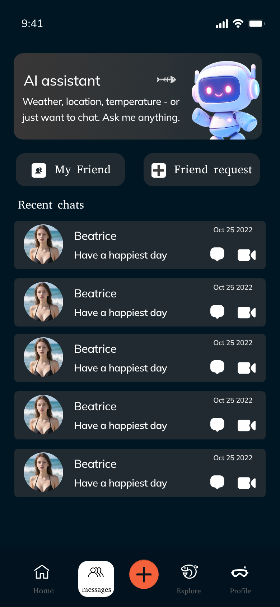
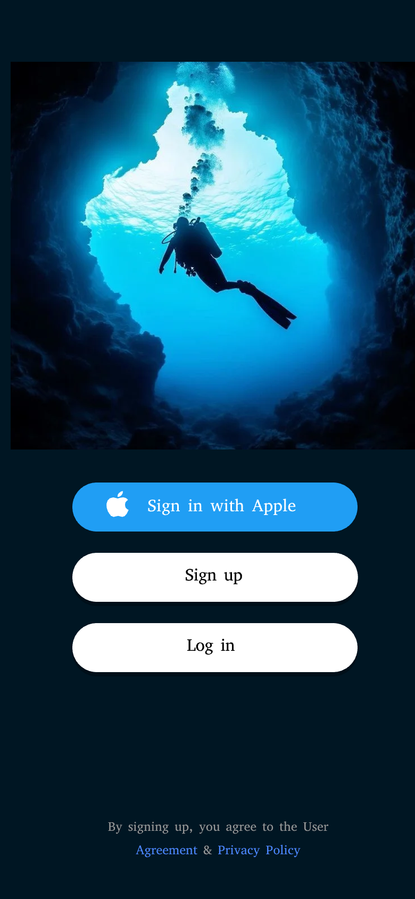
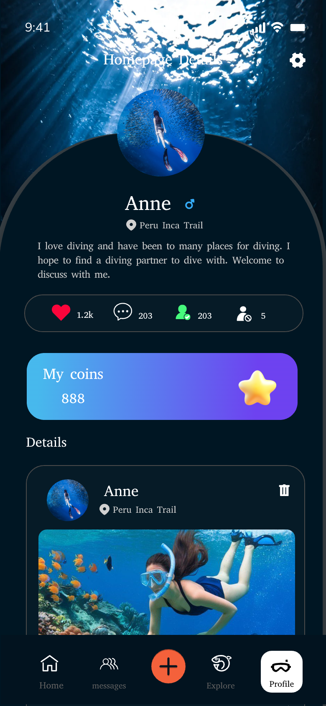
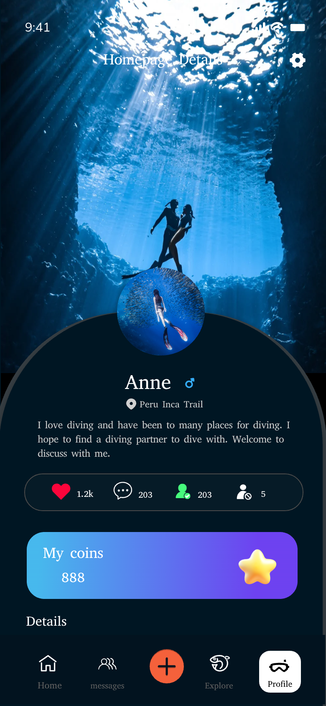

潜水分享 · 潜水员约潜社区 App
潜水员缺的从来不是装备，是同伴：潜点散落在海岛，船位要凑人，陌生人之间又缺一个共同的语境。这个 App 就是把「看别人的海」和「找到下一个同行的人」放进同一条动线——先逛潜点，再看别人的推荐，最后在消息里把时间与船位对上。整套界面按一屏一屏铺完，不是几张效果图。
主视觉

项目背景
海外潜水社区 · 潜点与同伴两条线
这款 App 面向东南亚与美洲的休闲潜水员：一年下水三五次的人，和一年下水五十次的人混在同一个社区里。旧版把两类内容塞进同一条按时间排的信息流——新手刷到一堆深潜炫技，找不到「这个季节哪个岛能见度最好」；老手发了作品也只有陌生人点个赞，凑不齐下一次船位。
重做没有加新功能，而是把「去哪潜」和「跟谁潜」分开：首页用 Hotspots 横滑挂住潜点，Recommendation 承接单列内容流；Community Picks 把潜点做成有图文介绍的榜单；探索页按 Snorkeling / deep dive 切内容；最后落到消息——AI 助手先答天气与水温，人和人再谈船位。
设计策略
一屏一张卡，水下实拍永远在前
- 首页做成「一张大图 + 三个潜点 + 一条内容」：顶部是全屏水下实拍，一句 Let's discover the joy of diving together 直接压在画面里；Hotspots 横滑只有三张（Indonesia / Philippines / Malaysia），第一屏固定露出 2.5 张，滑动本身就是暗示「还有别的岛」。
- 推荐卡只留四处信息：作者行（头像 / 名字 / 地点 / 关注 / 更多）、一段视频或大图、一句正文、三个数字（1.2k 点赞 / 203 评论 / 鱼骨分享）。作者行固定在卡片顶部同一高度，不管图片多高都不跳动。
- Community Picks 一行一潜点：左边竖版实拍缩略图，右边潜点名 + 一段能直接读的介绍，底部叠三颗头像表示「谁去过」、右侧一枚鱼骨分享。潜点名走衬线，介绍走无衬线两行截断——一眼就能判断要不要点进去。
- 探索页只做一件事：按潜水方式分内容。顶部两颗 tab（Snorkeling / deep dive），选中态用一条海蓝下划线而不是填色块；下面沿用推荐卡，去掉「更多」与关注，因为这一页是「看内容」，不是「认识人」。
- 个人主页用实拍开场 + 深色大圆角 sheet：照片占上半屏，sheet 从图下沿以 200px 圆角升起；头像骑在分界线上，昵称 Anne 与地点 Peru Inca Trail 压在第一行，往下是四项数据（点赞 / 评论 / 关注 / 潜数）、一条渐变金币条（My coins）与 Details 作品区。
部分界面截图
这个 App 是按整站交付的 · 这里挑 8 屏
这次交付的是整个 App 的界面，不是几张效果图：登录选择、首页、推荐详情与留言、Community Picks 潜点榜、探索、消息（AI assistant ＋ 好友与私聊）、个人主页、金币与设置，连同空态与加载态一起出稿。下面 8 屏全部来自设计稿原图，是这套稿子里的一小部分。
挑这 8 屏，是因为它们各自回答一个不同的问题——第一眼看到什么（首页）、点进去之后信不信（推荐详情）、去哪潜（潜点榜）、按什么方式找内容（探索）、怎么把人约成（消息）、怎么进来（登录）、这个人是谁（个人主页）、他潜过什么（个人主页下滑）。








视觉语言
深水暗底 · 珊瑚橙 · 海蓝 · 薄荷绿 · 雾白
深水暗底 #0b1a22 铺满整屏，是海水；珊瑚橙 #f4623a 只给「按下去一定会发生事」的地方——底栏正中那颗加号、主按钮、点赞；海蓝 #2f9bf5 只做链接与 Sign in with Apple，绿色 #33d67d 只留给「已关注」这一种状态；文字用雾白 #eaf4f8，比纯白软一档，压在暗底上久看不刺。整个 App 只有两档字号层级在标题上：衬线 42px（页面主标题）与 28px（区块标题），正文回到系统无衬线——一屏里只用一个衬线标题做对比，剩下全靠字重分层次。首页那句 Let's discover the joy of diving together 是唯一的例外：像素风的 8-bit 字形，只用一次，用来把「这是海」这件事说清楚。形状上 sheet 用 200px 超大圆角（模拟浮出水面），卡片 20–28px，缩略图 14px，按钮全部胶囊；水下实拍永远带一层 12–18% 的暗角，文字只在实色层上出现。
遇到的问题与解决
3 个「深色 + 大图」带来的取舍
问题首页既要给潜点入口，又要给内容流：hero 一占满屏，第一张推荐卡就整张看不见了。
解决hero 只负责气质，不负责入口：Hotspots 用负 margin 骑在 hero 下沿，横滑卡片自带高度、不额外占位；Recommendation 从第二屏开始。这样第一屏永远固定是「大图 + 三个潜点 + 第一张卡的上沿」，滚动距离也不会因为潜点数量变化而跳动。
问题深色界面 + 满屏水下实拍，文字和图很容易糊在一起：白字压在亮水面上读不出来，图一压暗又失去通透感。
解决定一条硬规则：文字只落在实色层（#0b1a22 / #17242b）上，实拍永远不进文字区。照片统一压 12–18% 暗角、标题走衬线加大字号；反过来，图片区域里只允许出现压在底部的深色胶囊（潜点名）与一枚圆形播放键——凡是需要读的句子，一律退到实拍之外的卡片上。
问题金币、关注数、潜数都想要一块位置，个人主页第一屏塞不下第五个数字。
解决把四项数据压成一条描边胶囊（点赞 / 评论 / 关注 / 潜数），横向等分、图标在左数字在右；金币不混进这条胶囊，单独做成一条渐变横幅 My coins——余额用大字，右侧一颗星星。作品区整体挪到第二屏，第一屏只留「这个人是谁、有多少人信他、他有多少金币」。
从设计到交付
3 步 · 从两屏打样铺到整个 App
-
1 · 概念 · 把「海」做成封面
先定气质：深水暗底 + 衬线标题 + 满屏水下实拍，读起来像一本潜水日志，而不是一个社区工具。用首页与 Community Picks 两屏打样，确认「实拍在前、界面退后」这条底线，再动其他页面。
-
2 · 制作 · 先拆两条路，再铺全站
把「去哪潜」与「跟谁潜」拆成两条独立的线：潜点线是 Hotspots → Community Picks，人的线是 Recommendation → 推荐详情 → 消息 → 个人主页；两条各自铺完之后，再补登录、探索、金币与设置。鱼骨分享、关注胶囊、金币条、底部五格 tab 收成一套图标与组件规范。
-
3 · 交付 · 组件、标注与走查
交付组件 Variant 与页面清单，和开发一起走查 iOS / Android：深色界面在 OLED 上的偏色、长屏水下实拍在 2x / 3x 下的裁切、底部 tab 与吸底输入框的安全区，以及长潜点名与长简介是否顶破卡片，逐项确认。
交付内容
这次做了什么